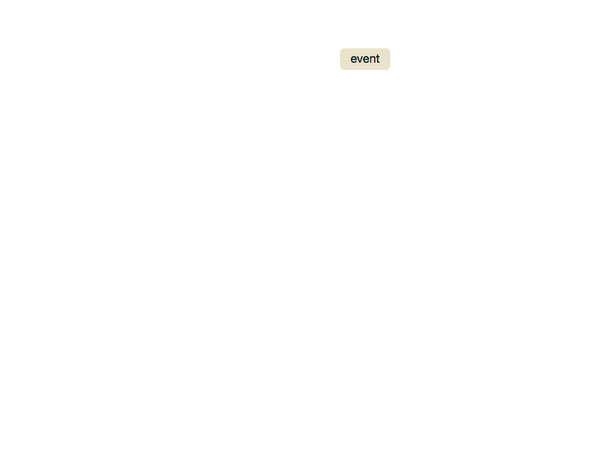

Notification routing
The graphic below shows how events are turned into
notifications, and how notifications are routed to contacts as alerts. Further down, you
can find a step-by-step description of the process.

Details
Receive events.
- Events are generated by external check execution systems and created as json objects in the
events queue in Redis.
- Processor removes events off the queue and processes them one by one.
Determine when to generate a notification. The event is discarded by the filters if ANY of the following are true:
- event state is OK and it’s the first event we’ve seen for this check (new check)
- event state is OK and previous state for check was OK
- check is in scheduled or unscheduled maintenance
- check is failing and duration of current failure is less than the
initial_failure_delay (default 30 seconds, can be specified in the incoming event)
- check is failing and time elapsed since last notification is less than
repeat_failure_delay (default 60 sec, can be specified in the incoming event)
Find interested contacts
- contacts that have this event’s entity
- contacts that have the special entity with id
ALL
For each contact
- Find the subset of applicable notification rules based on entity, tags, severity,
time of day. Find all the
notification rules for the contact,
for which all of the following are true:
- If the rule has any
tags, then they must all be present in the event’s tags. Note that
an event has a number of tags created automatically by the processor: the entity name, domain, hostname, and each of the words in the check name. Tags can also be added to incoming events by check execution systems, e.g., flapjackfeeder.
- If the rule has any
regex_tags, then they must all match at least one of the event’s tags.
- If the rule has any
entities, then one of them must be the event’s entity.
- If the rule has any
regex_entities, then at least one of them must match the event’s entity.
- If the rule has any
time_restrictions, then at least one of them must match the event’s timestamp.
- Skip contact based on blackhole notification rules.
- If any of the remaining notification rules are blackhole rules for the event’s state, e.g.,
warning_blackhole == true when event’s state == warning, we do not notify
this contact.
- Find the notifiable media for the contact based on notification rules.
- From the remaining notification rules, get the
media listed in each rule for the event’s
state. For example, if event’s
state == warning, then get all warning_media from the remaining notification rules.
- If there are no notifiable media, we do not notify the current contact.
- Discard media based notification interval.
- If the check is failing, discard media
to which an alert has been sent in the last media
interval seconds. Each media has its own value for interval, e.g., Ada may want to receive repeat alerts every 2 hours by SMS.
Creating the above graphic
- Export architecture diagrams to PNG
- Convert to gif using Acorn or similar